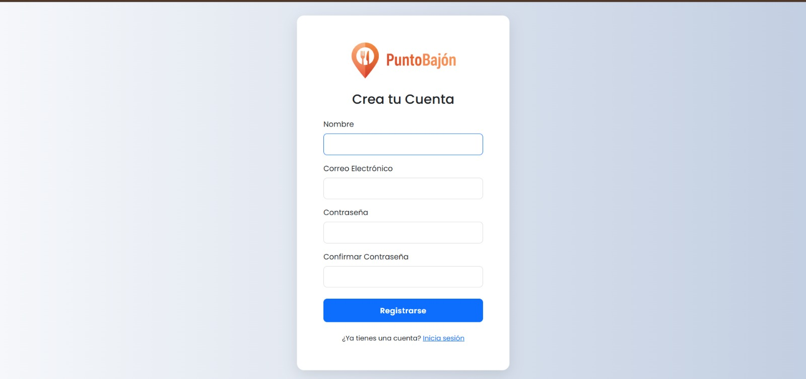
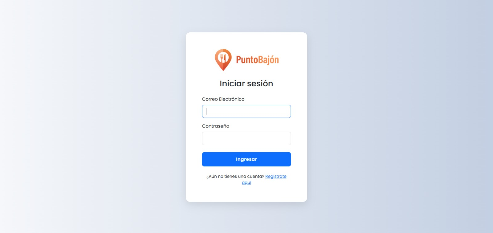
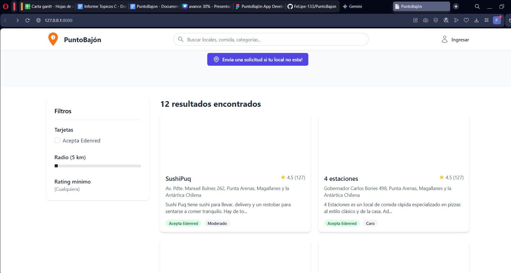

Proyecto de una appweb para buscar restaurantes con filtros
¡Proyecto en proceso!Una aplicación web desarrollada para buscar y descubrir restaurantes. La característica principal es su sistema de filtros avanzados, que permite a los usuarios buscar por tipo de comida, rango de precios, valoración de otros usuarios y ubicación.
Repositorio del proyecto en GitHub
Imágenes del proyecto:


